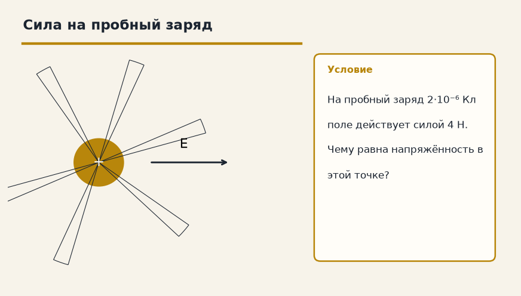

Тема «Напряженность электрического поля»: физический смысл, единицы величин, типичные ошибки и два разобранных примера.

Схема к условию.
Физический смысл
Силовая характеристика поля. Показывает, с какой силой поле действует на единичный положительный заряд.
Напряжённость E — сила, которая действовала бы на заряд +1 Кл, помещённый в эту точку. Поэтому E = F/q, где q — пробный заряд, а F — сила на него. Если поле создаёт точечный заряд Q, то E = k·Q/r², и от пробного заряда эта формула уже не зависит.
Вектор E направлен от положительного заряда и к отрицательному. Силовые линии рисуют в ту же сторону: куда поехал бы маленький плюс.
С расстоянием поле точечного заряда слабеет как 1/r², ровно как сила Кулона. Аналог из механики — g = 9,8 Н/кг: тоже «сила на единицу», только на килограмм массы.
Формула и единицы
E = F / q
E = k · Q / r²
Q — заряд, создающий поле.
E = F/q. Для точечного заряда E = k·Q/r². Q — заряд-источник.
Пояснение
Гравитационное поле Земли. Напряженность g = 9.8 Н/кг — это аналог E. Чем дальше от заряда, тем слабее поле (E падает как 1/r²).
g = 9,8 Н/кг показывает, какая сила тяжести приходится на 1 кг. E показывает, какая электрическая сила приходится на 1 Кл.
Типичные ошибки
Не направляй E «куда попало». От плюса — наружу, к минусу — внутрь. И не путай Q, который создаёт поле, с q, на который поле действует.
Схему к задаче нарисуйте сами. Решение открывается отдельно.
Разбор 1
Пробный заряд
На заряд 5·10⁻⁶ Кл поле действует силой 1 Н. Найдите напряжённость в этой точке.
Сначала данные, затем перевод в СИ, если он нужен, потом ход и ответ.
Дано. F = 1 Н, q = 5·10⁻⁶ Кл
В СИ. Перевод не нужен: все величины уже заданы в СИ.
Найти. E
Решение.
E = F / q = 1 / 5·10⁻⁶ = 2·10⁵ Н/Кл.
2·10⁵ Н/Кл.
Схема для сверки. Её рисуют до того, как открывают решение.
Разбор 2
Отрицательный источник
Поле создаёт отрицательный точечный заряд. Куда направлен вектор E?
Сначала данные, затем перевод в СИ, если он нужен, потом ход и ответ.
Дано. источник отрицателен
В СИ. Перевод не нужен: все величины уже заданы в СИ.
Найти. направление E
Решение.
Вектор E направлен к отрицательному заряду.
К заряду.
Схема для сверки. Её рисуют до того, как открывают решение.
Разбор 3
Кто в знаменателе
В определении E = F / q какой заряд стоит в знаменателе?
Сначала данные, затем перевод в СИ, если он нужен, потом ход и ответ.
Дано. сила измерена на пробном заряде
В СИ. Перевод не нужен: все величины уже заданы в СИ.
Найти. q
Решение.
Это пробный заряд, а не заряд-источник.
Пробный заряд.
Схема для сверки. Её рисуют до того, как открывают решение.
Разбор 4
Источник в формуле
В формуле E = k |Q| / r² что такое Q?
Сначала данные, затем перевод в СИ, если он нужен, потом ход и ответ.
Дано. поле точечного заряда
В СИ. Перевод не нужен: все величины уже заданы в СИ.
Найти. Q
Решение.
Q — заряд, который создаёт поле.
Заряд-источник.
Схема для сверки. Её рисуют до того, как открывают решение.
Разбор 5
Дальше вдвое
Расстояние до точечного заряда увеличили в 2 раза. Как изменилась напряжённость?
Сначала данные, затем перевод в СИ, если он нужен, потом ход и ответ.
Дано. r₂ = 2 r₁
В СИ. Перевод не нужен: все величины уже заданы в СИ.
Найти. E
Решение.
E пропорциональна 1/r².
Уменьшилась в 4 раза.
Уменьшилась в 4 раза.
Схема для сверки. Её рисуют до того, как открывают решение.
Разбор 6
Микрокулон
Точечный заряд 2 мкКл создаёт поле. Найдите E на расстоянии 30 см. k = 9·10⁹.
Сначала данные, затем перевод в СИ, если он нужен, потом ход и ответ.